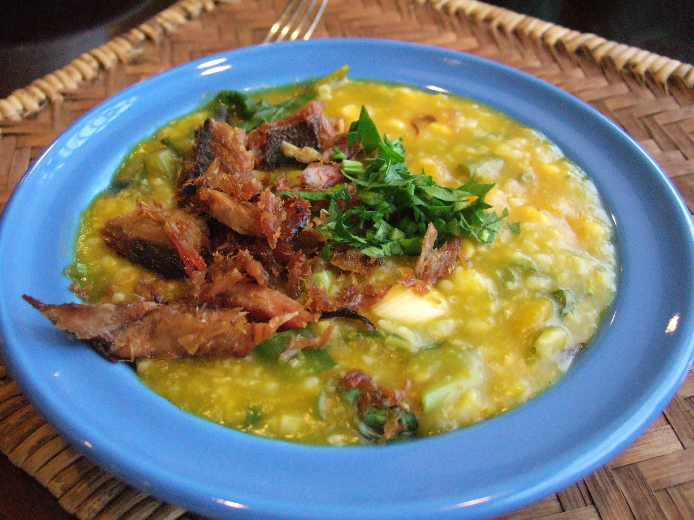

Bubur Manado

Bubur Manado
Bahan :
- 200 gram beras
- 2 Buah jagung manis dipipil
- 150 gram singkong potong dadu
- 100 gram ubi kuning potong dadu
- 1 kg labu kuning, dikukus dan lumatkan dengan garpu
- 4 liter air
Bahan Sayur :
- 5 lembar daun gedi, rajang halus
- 1 lembar daun kunyit,rajang sehalus mungkin
- 2 batang daun bawang, rajang halus
- 1 ikat kangkung, ambil daun dan pucuk mudanya, rajang kasar
- 1 ikat kecil bayam, ambil daun
- 1 mangkuk kemangi, dari 5 ikat kecil kemangi, ambil daun dan pucuk mudanya saja
Bumbu :
- 5 batang serai, ambil bagian putihnya saja dan memarkan.
- 2 lembar daun salam
- 1 sdm garam
- kaldu jamur secukupnya
- 6 bawang putih, cincang halus
- 6 bawang merah iris tipis
Bumbu Pelengkap :
- Sambal dabu dabu atau sambal korek
- Ikan asin goreng
Cara Memasak
- Cuci bersih beras,lalu di panci masukkan air, beras, singkong, ubi masak dengan api kecil sampai singkong dan ubi lembut
- Masukkan bawang putih, bawang merah, daun salam dan serai sambil terus diaduk, masukkan jagung dan labu kuning
- Tambahkan air bila diperlukan, masukkan garam lada dan kaldu jamur aduk rata lagi
- Setelah beras sudah menjadi bubur terakhir masukan semua sayuran aduk rata, koreksi rasa, angkat